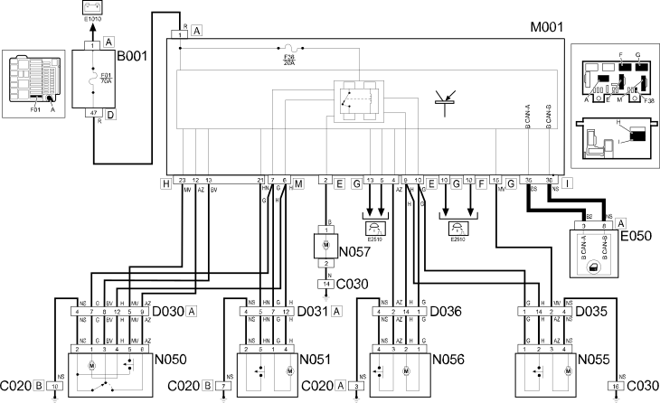

E3040 CENTRAL LOCKING - Wiring diagram
- Path
- Electrical equipment > 1 ELECTRICAL FUNCTIONS > E30 Electrically activated devices > E3040 CENTRAL LOCKING > E3040 CENTRAL LOCKING - Wiring diagram
- Kind
- wiring diagram
- Applies to
- all engines; all production periods
- Interactive page
- https://sloeber94.github.io/elrnDB-fPnd/en/#/2751487
Applies to: all engines; all production periods
Wiring diagram

COMPONENTS
Component code | Name | Assembly reference |
|---|---|---|
Engine compartment junction unit | ||
engine compartment junction unit | ||
Passenger side dashboard earth | - | |
Left rear earth | - | |
Front left door connection | - | |
Front right door connection | - | |
Rear left door connection | - | |
Rear right door connection | - | |
Instrument panel | ||
Body computer | ||
Left front door lock geared motor | ||
Right front door lock geared motor | ||
Left rear door lock geared motor | ||
Right rear door lock geared motor | ||
Boot lock gearmotor |
Topics linked from this page (20)
- 5505A multi-function components
- 5505C vehicle compartment wiring
- 5560B analogue control panel
- 7005N front door central locking system
- 7010N rear side door central locking system
- 7015B tailgate locking/opening devices
- E50 ENGINE CONTROL AND MANAGEMENT SYSTEMS
- B001 JUNCTION UNIT
- C020 PASSENGER SIDE DASHBOARD EARTH
- C030 LEFT REAR EARTH
- D030 DRIVER'S FRONT DOOR COUPLING
- D031 PASSENGER FRONT DOOR COUPLING
- D035 LEFT REAR DOOR COUPLING
- D036 RIGHT REAR DOOR COUPLING
- M001 BODY COMPUTER
- N050 DRIVER'S FRONT DOOR LOCK GEARED MOTOR
- N051 RIGHT FRONT DOOR LOCK GEARED MOTOR
- N055 LEFT REAR DOOR LOCK GEARED MOTOR
- N056 RIGHT REAR DOOR LOCK GEARED MOTOR
- N057 BOOT LOCK GEARED MOTOR